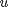
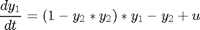
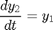
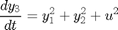
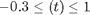
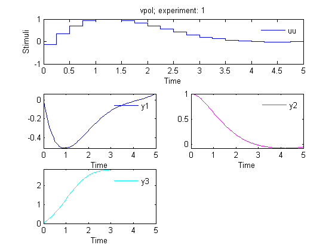

AMIGO_DO: Dynamic Optimization
Contents
AMIGO_DO: solves multi- and single- objective dynamic optimization problems using the Control Vector Parameterization (CVP) approach This tool can be used for optimization based modeling (dynamic flux balance analysis (DFBA), enzyme activation optimization, etc.) and for stimulation design (dynamic metabolic engineering, bioprocess optimization, etc.)
It may handle:
- Single or multi-objective cases
- Constraints on decision variables
- Constraints on state variables
It may call several optimizers:
- LOCAL optimization methods: indirect and direct methods
- MULTISTART of local methods
- GLOBAL optimization methods: DE, SRES
- HYBRID optimization methods: eSS, sequential hybrids
- MULTI-objective solvers: NSGAII plus the weighted sum method; Epsilon-constraint approach can be implemented using constraints
Options:
- 'run_identifier' to keep different folders for different runs, this avoids overwriting
- 'nlp_solver' to rapidly change the optimization method
- 'reopt' to activate ('on') re-optimization
- 'reopt_local_solver' solver for reoptimization
- 'n_reOpts' number of reoptimizations
Example
This is a well know dynamic optimization problem often used as a benchmark case for DO methods. The objective is to simultaneously minimize the amplitude of the oscillations and the control effort subject to the oscillator dynamics and maximum and minimum allowed values for the control :




clear; %=========================== %RESULTS PATHS RELATED DATA %=========================== inputs.pathd.results_folder='vpol'; % Folder to keep results (in Results\) inputs.pathd.short_name='vpol'; % To identify figures and reports %====================== % MODEL RELATED DATA %====================== inputs.model.input_model_type='charmodelF'; % Model type inputs.model.n_st=3; % Number of states inputs.model.n_par=0; % Number of parameters inputs.model.n_stimulus=1; % Number of stimuli inputs.model.st_names=char('y1','y2','y3'); % Names of the states inputs.model.stimulus_names=char('uu'); % Names of the stimuli inputs.model.eqns=char(... % Model 'dy1=(1-y2*y2)*y1-y2+uu',... 'dy2=y1',... 'dy3=y1*y1+y2*y2+uu*uu'); %========================================== % Dynamic optimization problem formulation %========================================== inputs.DOsol.y0=[0 1 0]; %Initial conditions inputs.DOsol.tf_type='fixed'; %Process duration type: fixed or free inputs.DOsol.tf_guess=5; %Process duration %COST FUNCTION inputs.DOsol.DOcost_type='min'; %Type of problem: max/min inputs.DOsol.DOcost='y3'; %Cost functional %CVP (Control Vector Parameterization) DETAILS

inputs.DOsol.u_interp='stepf'; %Control definition %'sustained' |'stepf'|'step'|'linear'| inputs.DOsol.n_steps=20; inputs.DOsol.u_guess=0.7.*ones(1,inputs.DOsol.n_steps);% Initial guess for the input inputs.DOsol.u_min=-0.3.*ones(1,inputs.DOsol.n_steps); inputs.DOsol.u_max=1.*ones(1,inputs.DOsol.n_steps); % Minimum and maximum value for the input inputs.DOsol.t_con=0:5/inputs.DOsol.n_steps:5; % Input swithching times, including intial and % final times %================================== % NUMERICAL METHDOS RELATED DATA %================================== % SIMULATION inputs.ivpsol.ivpsolver='radau5'; inputs.ivpsol.senssolver='odessa'; inputs.ivpsol.rtol=1.0D-7; inputs.ivpsol.atol=1.0D-7; %OPTIMIZATION inputs.nlpsol.nlpsolver='local_ipopt'; % In this case the problem can be solved with % a local optimizer
More information regarding the inputs used in this example can be found here.
AMIGO_Prep(inputs); AMIGO_DO(inputs);
***********************************
AMIGO2, Copyright @CSIC
AMIGO2_R1_2015 [Oct 2015]
***********************************
*Date: 23-Oct-2015
------>Pre processing....this may take a few seconds.
------>Checking inputs....
------> WARNING message
AMIGO_check_model: You did not specify inputs.model.exe_type, standard will be assumed
------> Generating fortran code ...
------> Mexing files....
In file D:\AMIGO2_REPO_2014\AMIGO_R2012_cvodes\Kernel\IVP_solvers\radau5\cradau5g.f:86
CALL FCNCRADAU5(NLHS,PL,NRHS,PR,A3,A5,A7,A9,A10,A13,A15,A17,
1
In file D:\AMIGO2_REPO_2014\AMIGO_R2012_cvodes\Kernel\IVP_solvers\radau5\cradau5g.f:92
SUBROUTINE FCNCRADAU5(NLHS,PL,NRHS,PR,A3,A5,A7,A9,A10,A13,A15,
2
Warning (155): Inconsistent types (INTEGER(4)/REAL(8)) in actual argument lists at (1) and (2)
In file D:\AMIGO2_REPO_2014\AMIGO_R2012_cvodes\Kernel\IVP_solvers\odessa\codessag.f:82
CALL FCNCODESSA(NLHS,PL,NRHS,PR,A3,A4,A12,A13,A15,A18,A20,
1
In file D:\AMIGO2_REPO_2014\AMIGO_R2012_cvodes\Kernel\IVP_solvers\odessa\codessag.f:88
SUBROUTINE FCNCODESSA(NLHS,PL,NRHS,PR,A3,A4,A12,A13,A15,A18,A20,
2
Warning (155): Inconsistent types (INTEGER(4)/REAL(8)) in actual argument lists at (1) and (2)
------>Files generated....
***********************************
AMIGO2, Copyright @CSIC
AMIGO2_R1_2015 [Oct 2015]
***********************************
*Date: 23-Oct-2015
------>Checking inputs....
Warning: Directory already exists.
The following files have been created:
ans =
D:\AMIGO2_REPO_2014\AMIGO_R2012_cvodes\Results\vpol\AMIGO_DOcost_vpol.m
ans =
D:\AMIGO2_REPO_2014\AMIGO_R2012_cvodes\Results\vpol\AMIGO_DOconst_vpol.m
*************************************************************************
------>IMPORTANT!!: Most of the optimization solvers have their own
tunning parameters (options).
Defaults have been assigned in the *NLPsolver*_options
files. You may need to modify those settings for your
particular problem, specially:
- maximum number of function evaluations /iterations,
- maximum computational time
******************************************************************
Solving the NLP problem with Local Optimizer: ipopt
Summary of selected local solver (ipopt) options:
maxeval: 500,
maxtime: 60
>Bounds on the unknowns:
v_guess(1)=0.700000; v_min(1)=-0.300000; v_max(1)=1.000000;
v_guess(2)=0.700000; v_min(2)=-0.300000; v_max(2)=1.000000;
v_guess(3)=0.700000; v_min(3)=-0.300000; v_max(3)=1.000000;
v_guess(4)=0.700000; v_min(4)=-0.300000; v_max(4)=1.000000;
v_guess(5)=0.700000; v_min(5)=-0.300000; v_max(5)=1.000000;
v_guess(6)=0.700000; v_min(6)=-0.300000; v_max(6)=1.000000;
v_guess(7)=0.700000; v_min(7)=-0.300000; v_max(7)=1.000000;
v_guess(8)=0.700000; v_min(8)=-0.300000; v_max(8)=1.000000;
v_guess(9)=0.700000; v_min(9)=-0.300000; v_max(9)=1.000000;
v_guess(10)=0.700000; v_min(10)=-0.300000; v_max(10)=1.000000;
v_guess(11)=0.700000; v_min(11)=-0.300000; v_max(11)=1.000000;
v_guess(12)=0.700000; v_min(12)=-0.300000; v_max(12)=1.000000;
v_guess(13)=0.700000; v_min(13)=-0.300000; v_max(13)=1.000000;
v_guess(14)=0.700000; v_min(14)=-0.300000; v_max(14)=1.000000;
v_guess(15)=0.700000; v_min(15)=-0.300000; v_max(15)=1.000000;
v_guess(16)=0.700000; v_min(16)=-0.300000; v_max(16)=1.000000;
v_guess(17)=0.700000; v_min(17)=-0.300000; v_max(17)=1.000000;
v_guess(18)=0.700000; v_min(18)=-0.300000; v_max(18)=1.000000;
v_guess(19)=0.700000; v_min(19)=-0.300000; v_max(19)=1.000000;
v_guess(20)=0.700000; v_min(20)=-0.300000; v_max(20)=1.000000;
-------------------------------
Initial value problem related active settings
-------------------------------
ivpsolver: radau5
RelTol: 1e-007
AbsTol: 1e-007
mexfile: radau5g_vpol
Local search number: 1
Call local solver: IPOPT
Initial point function value: 5.438155
Warning: In the directory "D:\AMIGO2_REPO_2014\AMIGO_R2012_cvodes\Kernel\OPT_solvers\eSS\local_solvers\ipopt",
ipopt.mexw32 now shadows ipopt.dll.
Please see the MATLAB 7.1 Release Notes.
******************************************************************************
This program contains Ipopt, a library for large-scale nonlinear optimization.
Ipopt is released as open source code under the Common Public License (CPL).
For more information visit http://projects.coin-or.org/Ipopt
******************************************************************************
This is Ipopt version 3.4.1, running with linear solver ma27.
Number of nonzeros in equality constraint Jacobian...: 0
Number of nonzeros in inequality constraint Jacobian.: 0
Number of nonzeros in Lagrangian Hessian.............: 0
Total number of variables............................: 20
variables with only lower bounds: 0
variables with lower and upper bounds: 20
variables with only upper bounds: 0
Total number of equality constraints.................: 0
Total number of inequality constraints...............: 0
inequality constraints with only lower bounds: 0
inequality constraints with lower and upper bounds: 0
inequality constraints with only upper bounds: 0
iter objective inf_pr inf_du lg(mu) ||d|| lg(rg) alpha_du alpha_pr ls
0 5.4381547e+00 0.00e+00 2.26e+00 0.0 0.00e+00 - 0.00e+00 0.00e+00 0
1 4.7793707e+00 0.00e+00 3.91e+00 -0.4 3.74e-01 - 9.67e-01 5.00e-01f 2
2 4.1808611e+00 0.00e+00 1.41e+00 -0.8 1.04e-01 - 9.86e-01 1.00e+00f 1
3 3.7002154e+00 0.00e+00 1.80e+00 -1.3 3.06e-01 - 9.79e-01 1.00e+00f 1
4 3.3431866e+00 0.00e+00 6.86e-01 -2.2 8.03e-02 - 9.99e-01 1.00e+00f 1
5 2.9991386e+00 0.00e+00 7.90e-01 -2.7 1.85e-01 - 1.00e+00 1.00e+00f 1
6 2.9769166e+00 0.00e+00 1.19e+00 -3.1 3.17e-01 - 1.00e+00 1.00e+00f 1
7 2.8913361e+00 0.00e+00 1.43e-01 -3.1 1.06e-01 - 1.00e+00 1.00e+00f 1
8 2.8865386e+00 0.00e+00 6.54e-02 -4.3 3.08e-02 - 1.00e+00 1.00e+00f 1
9 2.8819383e+00 0.00e+00 1.10e-02 -5.0 6.39e-02 - 1.00e+00 7.14e-01f 1
iter objective inf_pr inf_du lg(mu) ||d|| lg(rg) alpha_du alpha_pr ls
10 2.8815695e+00 0.00e+00 4.53e-03 -5.0 1.89e-02 - 1.00e+00 7.26e-01f 1
11 2.8815668e+00 0.00e+00 1.56e-02 -5.0 7.36e-03 - 1.00e+00 5.00e-01f 2
12 2.8815456e+00 0.00e+00 4.68e-03 -5.0 1.26e-02 - 1.00e+00 2.50e-01f 3
13 2.8815445e+00 0.00e+00 2.89e-03 -5.0 2.30e-03 - 1.00e+00 2.50e-01f 3
14 2.8815410e+00 0.00e+00 2.73e-03 -5.0 1.74e-03 - 1.00e+00 1.00e+00f 1
15 2.8815407e+00 0.00e+00 1.03e-03 -5.0 5.39e-03 - 1.00e+00 6.25e-02f 5
16 2.8815409e+00 0.00e+00 4.11e-05 -5.0 3.86e-04 - 1.00e+00 1.00e+00f 1
17 2.8815409e+00 0.00e+00 2.05e-05 -5.0 5.32e-05 - 1.00e+00 1.00e+00f 1
18 2.8815245e+00 0.00e+00 1.22e-03 -6.0 8.35e-04 - 1.00e+00 1.00e+00f 1
19 2.8815418e+00 0.00e+00 7.06e-05 -5.0 8.79e-04 - 1.00e+00 1.00e+00f 1
iter objective inf_pr inf_du lg(mu) ||d|| lg(rg) alpha_du alpha_pr ls
20 2.8815413e+00 0.00e+00 2.78e-04 -5.0 1.18e-04 - 1.00e+00 5.00e-01f 2
21 2.8815408e+00 0.00e+00 1.53e-04 -5.0 7.06e-05 - 1.00e+00 1.00e+00f 1
22 2.8815409e+00 0.00e+00 3.36e-05 -5.0 6.59e-05 - 1.00e+00 5.00e-01f 2
23 2.8815243e+00 0.00e+00 6.94e-04 -6.0 8.33e-04 - 1.00e+00 1.00e+00f 1
24 2.8815423e+00 0.00e+00 2.80e-03 -5.0 8.82e-04 - 1.00e+00 1.00e+00f 1
25 2.8815422e+00 0.00e+00 1.80e-03 -5.0 6.42e-04 - 1.00e+00 1.00e+00f 1
26 2.8815411e+00 0.00e+00 9.96e-04 -5.0 4.18e-04 - 1.00e+00 1.00e+00f 1
27 2.8815408e+00 0.00e+00 9.72e-04 -5.0 6.19e-04 - 1.00e+00 5.00e-01f 2
28 2.8815409e+00 0.00e+00 1.02e-04 -5.0 1.30e-04 - 1.00e+00 1.00e+00f 1
29 2.8815409e+00 0.00e+00 4.51e-05 -5.0 4.56e-05 - 1.00e+00 1.25e-01f 4
iter objective inf_pr inf_du lg(mu) ||d|| lg(rg) alpha_du alpha_pr ls
30 2.8815243e+00 0.00e+00 1.70e-03 -6.0 8.45e-04 - 1.00e+00 1.00e+00f 1
31 2.8815415e+00 0.00e+00 6.03e-05 -5.0 8.81e-04 - 1.00e+00 1.00e+00f 1
32 2.8815409e+00 0.00e+00 3.09e-05 -5.0 3.65e-05 - 1.00e+00 1.00e+00f 1
33 2.8815239e+00 0.00e+00 1.09e-03 -6.0 8.84e-04 - 1.00e+00 1.00e+00f 1
34 2.8815410e+00 0.00e+00 1.17e-05 -5.0 8.85e-04 - 1.00e+00 1.00e+00f 1
35 2.8815409e+00 0.00e+00 3.90e-05 -5.0 2.20e-05 - 1.00e+00 2.50e-01f 3
36 2.8815246e+00 0.00e+00 1.29e-03 -6.0 8.38e-04 - 1.00e+00 1.00e+00f 1
37 2.8815243e+00 0.00e+00 5.63e-04 -6.0 6.83e-04 - 1.00e+00 2.50e-01f 3
38 2.8815236e+00 0.00e+00 8.64e-04 -6.0 1.28e-04 - 1.00e+00 1.00e+00f 1
39 2.8815422e+00 0.00e+00 5.15e-04 -5.0 9.51e-04 - 1.00e+00 1.00e+00f 1
iter objective inf_pr inf_du lg(mu) ||d|| lg(rg) alpha_du alpha_pr ls
40 2.8815419e+00 0.00e+00 3.11e-04 -5.0 7.75e-04 - 1.00e+00 2.50e-01f 3
41 2.8815408e+00 0.00e+00 2.22e-04 -5.0 8.34e-05 - 1.00e+00 1.00e+00f 1
42 2.8815409e+00 0.00e+00 4.48e-05 -5.0 1.06e-04 - 1.00e+00 2.50e-01f 3
43 2.8815242e+00 0.00e+00 2.90e-04 -6.0 8.37e-04 - 1.00e+00 1.00e+00f 1
44 2.8815235e+00 0.00e+00 3.38e-04 -6.0 3.02e-04 - 1.00e+00 1.00e+00f 1
45 2.8815424e+00 0.00e+00 1.63e-03 -5.0 9.43e-04 - 1.00e+00 1.00e+00f 1
46 2.8815419e+00 0.00e+00 7.27e-04 -5.0 4.91e-04 - 1.00e+00 5.00e-01f 2
47 2.8815407e+00 0.00e+00 1.03e-04 -5.0 1.78e-04 - 1.00e+00 1.00e+00f 1
48 2.8815408e+00 0.00e+00 1.91e-04 -5.0 1.01e-04 - 1.00e+00 1.00e+00f 1
49 2.8815408e+00 0.00e+00 1.77e-04 -5.0 1.84e-04 - 1.00e+00 1.25e-01f 4
iter objective inf_pr inf_du lg(mu) ||d|| lg(rg) alpha_du alpha_pr ls
50 2.8815409e+00 0.00e+00 1.23e-04 -5.0 6.05e-05 - 1.00e+00 1.00e+00f 1
51 2.8815408e+00 0.00e+00 1.19e-05 -5.0 2.52e-05 - 1.00e+00 1.00e+00f 1
52 2.8815253e+00 0.00e+00 9.17e-04 -6.0 7.87e-04 - 1.00e+00 1.00e+00f 1
53 2.8815247e+00 0.00e+00 2.46e-03 -6.0 1.75e-03 - 1.00e+00 5.00e-01f 2
54 2.8815243e+00 0.00e+00 1.02e-03 -6.0 1.38e-03 - 1.00e+00 2.50e-01f 3
55 2.8815239e+00 0.00e+00 1.07e-03 -6.0 1.36e-03 - 1.00e+00 5.00e-01f 2
56 2.8815236e+00 0.00e+00 2.74e-04 -6.0 6.51e-04 - 1.00e+00 5.00e-01f 2
57 2.8815235e+00 0.00e+00 1.96e-04 -6.0 7.45e-04 - 1.00e+00 2.50e-01f 3
58 2.8815235e+00 0.00e+00 1.50e-04 -6.0 1.28e-04 - 1.00e+00 1.00e+00f 1
59 2.8815460e+00 0.00e+00 3.99e-03 -5.0 1.07e-03 - 1.00e+00 1.00e+00f 1
iter objective inf_pr inf_du lg(mu) ||d|| lg(rg) alpha_du alpha_pr ls
60 2.8815413e+00 0.00e+00 1.84e-03 -5.0 1.02e-03 - 1.00e+00 1.00e+00f 1
61 2.8815411e+00 0.00e+00 1.40e-03 -5.0 3.10e-03 - 1.00e+00 1.25e-01f 4
62 2.8815405e+00 0.00e+00 2.49e-04 -5.0 3.21e-04 - 1.00e+00 1.00e+00f 1
63 2.8815406e+00 0.00e+00 2.94e-04 -5.0 2.17e-04 - 1.00e+00 5.00e-01f 2
64 2.8815406e+00 0.00e+00 1.22e-04 -5.0 7.30e-04 - 1.00e+00 1.25e-01f 4
65 2.8815408e+00 0.00e+00 7.41e-05 -5.0 2.21e-04 - 1.00e+00 5.00e-01f 2
66 2.8815244e+00 0.00e+00 4.00e-04 -6.0 8.27e-04 - 1.00e+00 1.00e+00f 1
67 2.8815235e+00 0.00e+00 3.27e-04 -6.0 4.43e-04 - 1.00e+00 1.00e+00f 1
68 2.8815235e+00 0.00e+00 2.80e-04 -6.0 2.15e-03 - 1.00e+00 6.25e-02f 5
69 2.8815235e+00 0.00e+00 1.40e-04 -6.0 5.35e-04 - 1.00e+00 1.25e-01f 4
iter objective inf_pr inf_du lg(mu) ||d|| lg(rg) alpha_du alpha_pr ls
70 2.8815235e+00 0.00e+00 3.79e-04 -6.0 2.55e-04 - 1.00e+00 1.00e+00f 1
71 2.8815235e+00 0.00e+00 1.07e-04 -6.0 8.50e-04 - 1.00e+00 6.25e-02f 5
72 2.8815234e+00 0.00e+00 2.00e-05 -6.0 1.29e-04 - 1.00e+00 1.00e+00f 1
73 2.8815429e+00 0.00e+00 9.89e-04 -5.0 1.13e-03 - 1.00e+00 1.00e+00f 1
74 2.8815414e+00 0.00e+00 3.00e-04 -5.0 1.54e-03 - 1.00e+00 1.00e+00f 1
75 2.8815413e+00 0.00e+00 2.52e-04 -5.0 1.05e-03 - 1.00e+00 6.25e-02f 5
76 2.8815412e+00 0.00e+00 4.96e-04 -5.0 7.89e-04 - 1.00e+00 2.50e-01f 3
77 2.8815410e+00 0.00e+00 3.53e-04 -5.0 8.65e-04 - 1.00e+00 2.50e-01f 3
78 2.8815410e+00 0.00e+00 1.71e-04 -5.0 5.74e-04 - 1.00e+00 6.25e-02f 5
79 2.8815409e+00 0.00e+00 1.21e-05 -5.0 5.76e-05 - 1.00e+00 1.00e+00f 1
iter objective inf_pr inf_du lg(mu) ||d|| lg(rg) alpha_du alpha_pr ls
80 2.8815253e+00 0.00e+00 4.45e-04 -6.0 7.79e-04 - 1.00e+00 1.00e+00f 1
81 2.8815234e+00 0.00e+00 3.00e-04 -6.0 4.76e-04 - 1.00e+00 1.00e+00f 1
82 2.8815420e+00 0.00e+00 7.33e-04 -5.0 9.43e-04 - 1.00e+00 1.00e+00f 1
83 2.8815419e+00 0.00e+00 7.87e-04 -5.0 8.74e-04 - 1.00e+00 2.50e-01f 3
84 2.8815416e+00 0.00e+00 3.96e-04 -5.0 8.54e-04 - 1.00e+00 2.50e-01f 3
85 2.8815409e+00 0.00e+00 1.11e-04 -5.0 2.15e-04 - 1.00e+00 1.00e+00f 1
86 2.8815408e+00 0.00e+00 3.22e-04 -5.0 7.39e-04 - 1.00e+00 1.25e-01f 4
87 2.8815408e+00 0.00e+00 3.13e-04 -5.0 2.05e-04 - 1.00e+00 2.50e-01f 3
88 2.8815409e+00 0.00e+00 1.69e-04 -5.0 1.88e-04 - 1.00e+00 5.00e-01f 2
89 2.8815409e+00 0.00e+00 3.35e-05 -5.0 5.53e-05 - 1.00e+00 1.00e+00f 1
iter objective inf_pr inf_du lg(mu) ||d|| lg(rg) alpha_du alpha_pr ls
90 2.8815250e+00 0.00e+00 9.05e-04 -6.0 8.01e-04 - 1.00e+00 1.00e+00f 1
91 2.8815244e+00 0.00e+00 1.73e-03 -6.0 1.74e-03 - 1.00e+00 5.00e-01f 2
92 2.8815235e+00 0.00e+00 1.44e-04 -6.0 5.31e-04 - 1.00e+00 1.00e+00f 1
93 2.8815235e+00 0.00e+00 1.91e-04 -6.0 3.53e-04 - 1.00e+00 2.50e-01f 3
94 2.8815235e+00 0.00e+00 1.26e-04 -6.0 1.68e-04 - 1.00e+00 5.00e-01f 2
95 2.8815235e+00 0.00e+00 8.72e-05 -6.0 2.43e-04 - 1.00e+00 2.50e-01f 3
96 2.8815235e+00 0.00e+00 1.56e-04 -6.0 7.56e-05 - 1.00e+00 5.00e-01f 2
97 2.8815235e+00 0.00e+00 8.18e-05 -6.0 2.42e-04 - 1.00e+00 2.50e-01f 3
98 2.8815234e+00 0.00e+00 3.27e-05 -6.0 2.51e-05 - 1.00e+00 1.00e+00f 1
99 2.8815234e+00 0.00e+00 1.14e-05 -6.0 2.24e-05 - 1.00e+00 2.50e-01f 3
iter objective inf_pr inf_du lg(mu) ||d|| lg(rg) alpha_du alpha_pr ls
100 2.8815234e+00 0.00e+00 2.02e-05 -6.0 1.27e-05 - 1.00e+00 1.00e+00f 1
Number of Iterations....: 100
(scaled) (unscaled)
Objective...............: 2.8815234459924466e+00 2.8815234459924466e+00
Dual infeasibility......: 2.0189880752796859e-05 2.0189880752796859e-05
Constraint violation....: 0.0000000000000000e+00 0.0000000000000000e+00
Complementarity.........: 9.0909091979712968e-07 9.0909091979712968e-07
Overall NLP error.......: 2.0189880752796859e-05 2.0189880752796859e-05
Number of objective function evaluations = 360
Number of objective gradient evaluations = 101
Number of equality constraint evaluations = 0
Number of inequality constraint evaluations = 0
Number of equality constraint Jacobian evaluations = 0
Number of inequality constraint Jacobian evaluations = 0
Number of Lagrangian Hessian evaluations = 0
Total CPU secs in IPOPT (w/o function evaluations) = 2.687
Total CPU secs in NLP function evaluations = 0.448
EXIT: Maximum Number of Iterations Exceeded.
Local solution function value: 2.881523
Number of function evaluations in the local search: 2504
CPU Time of the local search: 3.301660 seconds
----------------------------------------
>>>> DYNAMIC OPTIMIZATION:
----------------------------------------
>>>> Best objective function: min = 2.881523e+000
>>>> Best control profile:
>>>> Control u: 1
-0.135566 0.352486 0.706447 0.925751 0.999919 0.999905 0.944000 0.826032 0.688049 0.547059 0.414511 0.297317 0.198956 0.120502 0.061428 0.020237 -0.005059 -0.016681 -0.016745 -0.007357
>>>> Switching times:
0.000000 0.250000 0.500000 0.750000 1.000000 1.250000 1.500000 1.750000 2.000000 2.250000 2.500000 2.750000 3.000000 3.250000 3.500000 3.750000 4.000000 4.250000 4.500000 4.750000 5.000000
>>>> Final time: 5.000000
>>>> Constraints violation (c<=0): Equality constraints, Inequality constraints, Control constraints
c(1)=0.00e+000;
------>Plotting results....
Sorry, convergence curve plot is not available for local solvers, at the moment
------>Results (report and struct_results.mat) and plots were kept in the directory:
Results\vpol\OD_vpol_local_ipopt_run1
Click <a href="matlab: cd('D:\AMIGO2_REPO_2014\AMIGO_R2012_cvodes\Results\vpol\OD_vpol_local_ipopt_run1')">here</a> to go to the results folder or <a href="matlab: load('D:\AMIGO2_REPO_2014\AMIGO_R2012_cvodes\Results\vpol\OD_vpol_local_ipopt_run1\strreport_vpol_run1.mat')">here</a> to load the results.
 See also
References
Tanartkit, P., & Biegler, L.T. (1995). Stable decomposition for dynamic optimization. I&EC Res., 34, 1253-1266.
Vassiliadis, V. S.; Balsa-Canto, E.; Banga, J. R. Second order sensitivities of general dynamic systems with application to optimal control problems. Chem. Eng. Sci. 1999, 54, 3851.
AMIGO_htmldoc_inputs(inputs,fullfile(pwd,'html','doinputs.html'));